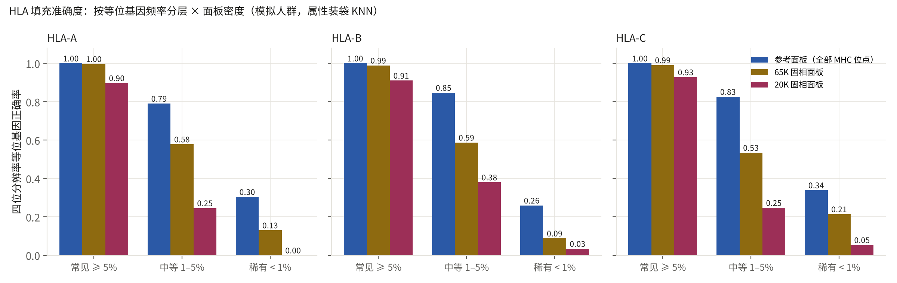
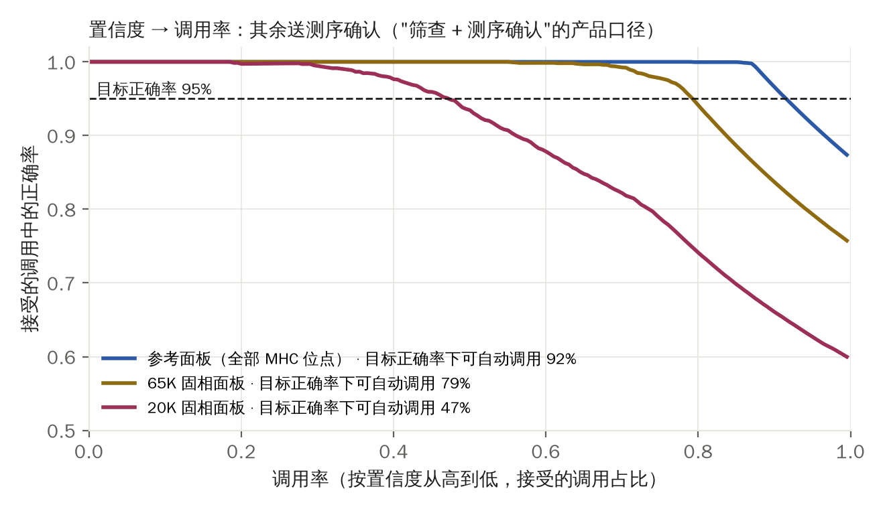
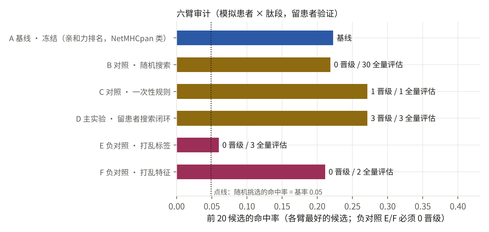
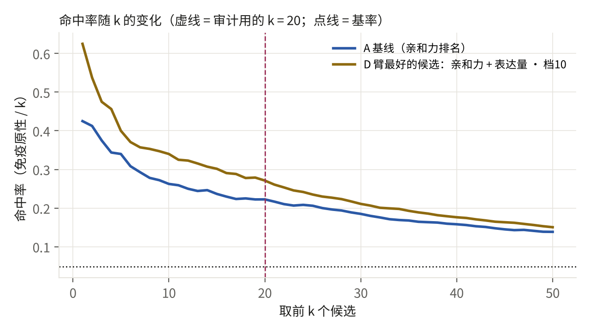

对照 PRD v3 §3 Demo 4 与 P-D4v3。它要证明 Deck 上的一句话：裁判不只审育种——任何要冻结 5–7 年的排序算法，都可以在冻结前接受同一套独立验证；HLA 分型是进入人类线的楔子。真实数据（1000 Genomes、中国人群 HLA 参考面板、TESLA）尚未到位，本页用明示参数的模拟器跑通流水线与报告格式。生成时间 2026-09-28 09:39 UTC，种子 4，配置哈希 db66c66a1b84。
| 模块 | 本版本用什么 | 真实版本用什么 | 状态 |
|---|---|---|---|
| 4a 人群与基因型 | 模拟 3,000 人，三个 I 类基因座，各 30/50/30 个四位分辨率等位基因，Zipf 型频谱 | 1000 Genomes + 中国人群 HLA 参考面板（PRD 决定 3） | 模拟 |
| 4a 填充模型 | 属性装袋 KNN（12 袋 × 40% 位点，k=15），置信度 = 票数份额 | HIBAG（Zheng 2014）/ SNP2HLA（Jia 2013） | 思路同，实现为简化版 |
| 4a 面板密度 | 保留 MHC 区位点的 100% / 25% / 8% 模拟参考面板 / 65K / 20K | 从公开面板抽样到拉索固相面板的实际位点 | 算法同 |
| 4b 患者 × 肽段 | 模拟 40 名患者 × 200 条肽段，免疫原性基率 ≈ 5% | TESLA 联盟公开部分（Wells 2020） | 模拟 |
| 4b 冻结基线 | 结合亲和力 %rank 排名（NetMHCpan 类） | NetMHCpan-4.1 输出（学术许可） | 格式同 |
| 4b 六臂与门 | 留患者 5 折；配对 top-20 命中率增益 bootstrap 区间；Bonferroni 按尝试数校正；负对照 E/F | 同（复用 Demo 1 的裁判纪律） | 已实现 |
| 4b 审计报告 | audit_report.md：冻结前独立验证报告，不含算法内部（权重不出现在报告里） | 同 | 已实现 |

| 基因座 | 频率档 | 参考面板（全部 MHC 位点） | 65K 固相面板 | 20K 固相面板 |
|---|---|---|---|---|
| HLA-A | 常见 ≥ 5% | 1.000 | 0.997 | 0.897 |
| HLA-A | 中等 1–5% | 0.790 | 0.578 | 0.246 |
| HLA-A | 稀有 < 1% | 0.304 | 0.130 | 0.000 |
| HLA-B | 常见 ≥ 5% | 1.000 | 0.989 | 0.910 |
| HLA-B | 中等 1–5% | 0.847 | 0.588 | 0.380 |
| HLA-B | 稀有 < 1% | 0.260 | 0.088 | 0.034 |
| HLA-C | 常见 ≥ 5% | 1.000 | 0.991 | 0.928 |
| HLA-C | 中等 1–5% | 0.826 | 0.535 | 0.247 |
| HLA-C | 稀有 < 1% | 0.339 | 0.214 | 0.054 |
| 基因座 | 参考面板（全部 MHC 位点） | 65K 固相面板 | 20K 固相面板 |
|---|---|---|---|
| HLA-A | 0.891 | 0.799 | 0.607 |
| HLA-B | 0.818 | 0.689 | 0.568 |
| HLA-C | 0.900 | 0.773 | 0.617 |
把每个调用按置信度（票数份额）从高到低排，只接受置信度足够高的调用，其余送测序确认。曲线回答产品问题：要保证被接受的调用正确率 ≥ 95%，芯片能自己决定多大比例？其余比例就是测序确认的成本。
| 面板 | 全部调用的正确率 | 正确率 ≥ 95% 时可自动调用的比例 | 需要送测序确认的比例 |
|---|---|---|---|
| 参考面板（全部 MHC 位点） | 0.870 | 92% | 8% |
| 65K 固相面板 | 0.754 | 79% | 21% |
| 20K 固相面板 | 0.597 | 47% | 53% |

各基因座等位基因数按频率档：{"HLA-A": {"common": 5, "intermediate": 20, "rare": 5}, "HLA-B": {"common": 4, "intermediate": 18, "rare": 28}, "HLA-C": {"common": 5, "intermediate": 20, "rare": 5}}。原始表 hla_accuracy.csv、hla_callrate.csv。

| 臂 | 提案数 | 全量评估数 | 晋级数 | 最好候选的 top-20 命中率 | 配对增益（vs 基线） | 校正后 α |
|---|---|---|---|---|---|---|
| A 基线 · 冻结（亲和力排名，NetMHCpan 类） | — | 0 | 0 | 0.223 | — | — |
| B 对照 · 随机搜索 | 30 | 30 | 0 | 0.219 | -0.004 [-0.039, +0.033] | 0.0033 |
| C 对照 · 一次性规则 | 1 | 1 | 1 | 0.271 | +0.049 [+0.026, +0.073] | 0.1000 |
| D 主实验 · 留患者搜索闭环 | 90 | 3 | 3 | 0.271 | +0.049 [+0.019, +0.079] | 0.0333 |
| E 负对照 · 打乱标签 | 90 | 3 | 0 | 0.060 | +0.003 [-0.014, +0.020] | 0.0333 |
| F 负对照 · 打乱特征 | 90 | 2 | 0 | 0.211 | -0.011 [-0.031, +0.008] | 0.0500 |

正式的"冻结前独立验证报告"见 audit_report.md：它只包含协议、数据哈希、门槛与结果，不包含任何候选算法的内部（权重、特征组合方式），可在不看算法源码的情况下写成——这是审计产品的形态。
bandwidth = samples_per_year / label_latency_years = 300 / 1.0 = 300（假设：一家个性化疗法公司每年 300 名患者进入审计，免疫原性 / 响应标签一年回流）。